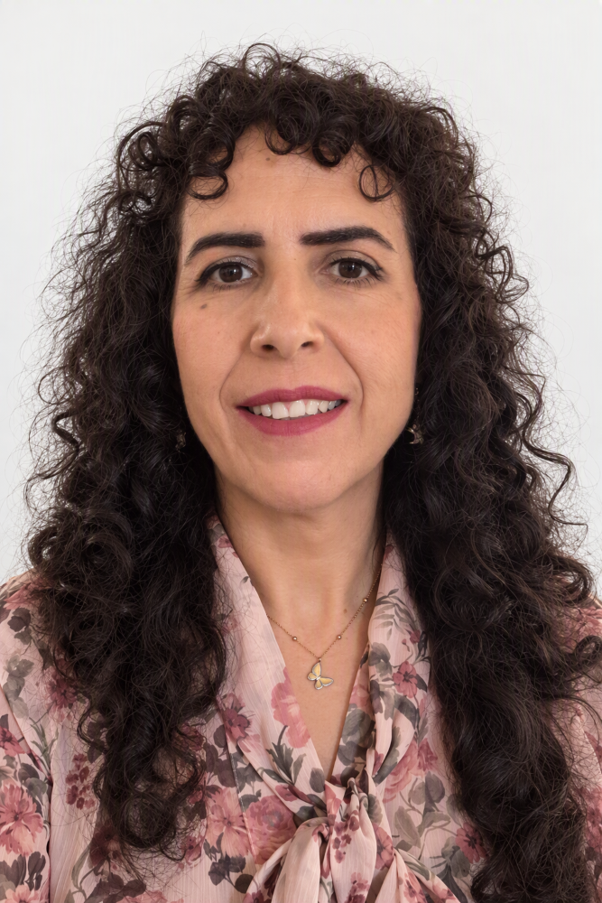

Psicologa | Consulenza e sostegno psicologico
Uno spazio di ascolto rispettoso e non giudicante per affrontare difficoltà personali, relazionali e professionali nel rispetto della propria storia, identità e unicità.
Prenota un colloquio Scopri di piùUno spazio sicuro per esplorare vissuti, bisogni, relazioni e identità personali.
Per comprendere meglio l'esperienza di una persona cara e favorire il dialogo.
Per affrontare sovraccarico, conflitti, cambiamenti professionali e difficoltà comunicative.
Per valorizzare le proprie risorse e costruire un rapporto più autentico con sé stessi.
Per comprendere ciò che genera disagio nelle relazioni affettive, sociali e professionali.
Supporto nei percorsi di adattamento a nuovi ambienti, lingue e culture.
Sono psicologa iscritta all'Ordine degli Psicologi della Campania e specializzanda in psicoterapia.
La mia formazione in Psicologia del Lavoro e delle Organizzazioni e la mia esperienza internazionale mi hanno portato a sviluppare una particolare attenzione al rapporto tra benessere psicologico, lavoro, relazioni e aspettative sociali.
Prima di intraprendere la professione psicologica ho lavorato per oltre vent'anni nel campo dell'intelligenza artificiale e delle tecnologie del linguaggio in contesti internazionali e multiculturali. Sono inoltre dottoressa di ricerca in Fisica.
Queste esperienze hanno arricchito la mia sensibilità verso le differenze individuali e culturali e verso i diversi modi di affrontare i cambiamenti e costruire relazioni significative.
Ci prendiamo il tempo per comprendere ciò che ti porta a chiedere un sostegno.
Esploriamo bisogni, aspettative e difficoltà attuali.
Valutiamo insieme gli obiettivi e le modalità del percorso.
Decidiamo insieme come proseguire nel modo più adatto a te.
Sì, offro colloqui online attraverso piattaforme protette e facilmente accessibili.
Sì, essendo madrelingua italiana e francese posso svolgere i colloqui in entrambe le lingue.
Generalmente ogni colloquio dura circa 50 minuti.
Puoi contattarmi telefonicamente, via email o tramite WhatsApp.
💻 Colloqui online
🗣️ Italiano e Francese